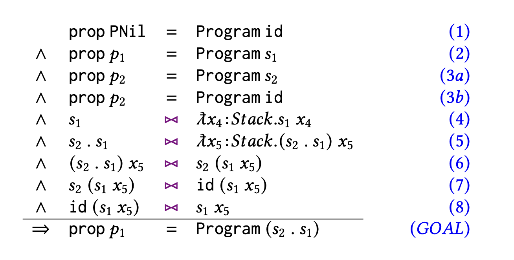

sum and psumThis lecture describes data propositions a feature of Liquid Haskell that mimics Rocq’s inductive predicates. We present them if three steps. We start with simple refined data types. Then, we present the simplest data proposition, that encodes Even numbers. Finally, we present a more complex example, that encodes the semantics of a stack machine.
Liquid Haskell allows to write invariants on data types. As an example, consider a data type encoding the date.
We could like to enforce that the day is between 1 and 31, the month is between 1 and 12, and the year is positive. Liquid Haskell enforces these invariants with a refined data definition:
The refined data definition is internally converted into refined types for the data constructor Date:
Date :: {v:Int | 1 <= v && v <= 31}
-> {v:Int | 1 <= v && v <= 12}
-> {v:Int | 0 < v}
-> DateIn other words, by using refined input types for Date we have automatically converted it into a smart constructor that ensures that every instance of a Date is legal. Consequently, LiquidHaskell verifies:
But it rejects a badDate:
Such kind of invariants appear often in programs to, for example, encode dependencies between data fields, sizes or properties of data structures, like red-black trees, heaps, etc.
Using refined data types we encode data propositions, that essentially axiomatize the behavior of predicates in the data type definitions, without actually giving a Haskell definition.
They are very similar to Rocq’s inductive predicates. Thus, let’s look at the using the textbook example of even numbers.
First, we define the data type of natural numbers.
Then, we axiomatize the proposition that a number is even.
The two constructors E0 and E2 axiomatize the evenness of numbers. E0 states that Z is even and E2 states that if n is even, then S (S n) is also even.
The definition is using the Prop type, that converts expressions into proof objects.
Further, it requires the unrefined Even Haskell definition as well as an EVEN data constructor.
There are two important points in this construction.
First, there is no function that computes evens, thus there is no termination check, meaning, that using data propositions one can encode non-terminating computations.
Second, the data proposition EVEN is a proof object, thus an Even value, gives us information how the proof was constructed.
Let’s construct some even numbers using the EVEN data proposition.
Question: Fill in the above definitions to construct the even numbers 0, 2, and 4.
The terms are defined as follows:
even0 = E0
even2 = E2 Z even0
even4 = E2 (S (S Z)) even2Since EVEN is a proof object one can inspect it, to, for example, show contradictions.
Question: Show that S Z is not even, by inspection.
The term is defined as follows:
even1_false E0 = ()
even1_false (E2 n p) = even1_false pAs a first function on even numbers, let’s define a function that takes a non zero, even number and returns its predecessor. That is, each even number, other than 0, can be written as 2 + n, for some n.
Question: Fill in the definition of the even_plus_2 function.
The term is defined as follows:
even_plus_2 _ (E2 n _) = (n,()) As a final exercise, let’s show that the sum of two even numbers is also even.
To do so, we first define the plus function:
Question: Fill in the definition of the even_plus function.
The term is defined as follows:
even_plus Z m pn pm
= pm
even_plus n m pn@(E2 _ pn') pm
= E2 (plus n' m) (even_plus n' m pn' pm)
where (n',_) = even_plus_2 n pn Data propositions are very useful to encode the semantics of programs. In this last part, we show how to use data propositions to encode the semantics of a stack machine.
This example is presented in PLEX OOPSLA’26 paper that extends Liquid Haskell’s PLE solver with higher-order reasoning. It is based on the correct-by-construction compiler previously mechanized in Agda.
Expression Language: The source of the compiler is a simple expression language:
The meaning of an expression is given by eval.
The Stack Machine: The target language is a stack machine with three instructions.
Each instruction denotes a stack transformer.
The OpAdd and OpMul cases need at least two stack elements. Instead of leaving that as a partial function, we introduce a reflected function that computes how many stack elements an opcode requires.
Now execOpCode can be given a precise precondition:
This is a typical refinement type: the operation determines the required shape of the stack.
A stack-machine program is essentially a list of opcodes. But for a correct-by-construction compiler, a plain list is too weak. We want the program to carry its semantics in its type.
Concretely, we will use data propositions to index programs by their semantics:
The index is a function from stacks to stacks. A value of type Program p represents a program whose semantics is the stack transformer p.
The indexed program constructors the following shape:
Read the constructors as follows.
PNil is the empty program. It performs no operations, so its semantics is id.
PCons op p rest adds the instruction op after a program whose semantics is p. The resulting semantics is: execOpCode op . p.
The type also checks that p produces enough stack elements for op.
Now we can write a function that composes two stack programs.
The specification says that if p1 has semantics s1 and p2 has semantics s2, then compose s1 s2 p1 p2 has semantics s2 . s1.
The verification requires reasoning about higher-order functions. In the PNil branch, we need to show that
Prop (Program s1) <: Prop (Program (s2 . s1))To automate such higher order reasoning, the PLEX algorithm extends Liquid Haskell’s PLE solver with beta, eta, unfolding, and local unification.

Assumptions 1-3 are introduced by the standard verification condition generation. 4 and 5 are \(\eta\)-expansions. 6 and 8 are function unfolding and 7 is (dependent pattern matching) unification. Once all these steps are collected, SMT’s congruence can easily discharge the goal.
In the PLEX paper, we show how higher order steps and dependent pattern matching are implemented in Liquid Haskell.
After compose is verified, we define a correct by construction compiler.
The correctness is guaranteed by the type signature of compile, which asserts that the semantics of the compiled program is equal to pushing on top ofthe stack the evaluation of the given expression.
The implementation follows the expression structure.
The proof is very similar to the proof in Agda, but the SMT solver handles the arithmetic part. For example, in the ENeg case, the compiler implements negation by multiplying by -1; the arithmetic proof that -a == a * (-1) is discharged by SMT automation.
We saw invariants on data types and how they naturally lead to data propositions. Yet, data propositions can be used to encode semantic indices that, in turn, require higher-order reasoning.
PLEX permits higher order reasoning, integrated with SMT automation, expanding the expressive power of refinement types; that can still be used to verify shallow properties of programs.